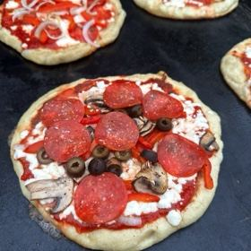

Source: lifestylewithleah.com
2 Harmons pizza dough
Olive Oil
Rao's homemade Pizza Sauce
Harmons bbq chicken (deli area)
Green Pepper
Red Onion
cherry tomatoes
arugala
Fresh Mozarella (for balls)
Pizzeria Blend Cheese
Whole Milk Mozarella
1/2 teaspoon Italian Seasoning
1 teaspoon Garlic Powder
1 teaspoon Onion Powder
Heat up your Blackstone griddle on low.
While it is heating up, roll out your pizza dough into mini pizzas and add some olive oil and seasoning to the crust.
Throw the peppers, onions, and mushrooms and let them cook.
*Do this with any toppings that need to be cooked prior to making the pizza. Unlike the oven, you will want these cooked down a little bit beforehand or they won't really cook much.
When the toppings are ready, take your rolled out pizza dough and place it on the griddle.
Add a cover to the dough to let it cook for about 2-4 minutes or until golden brown. Then when ready, flip it and let it cook for 2 more minutes.
This is when you can add your sauce, cheese, and toppings.
Cover it wiht basting cover again to let the top cook a bit and don't forget to check the bottom of the pizza!